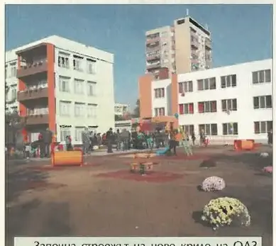

2013 — Годината на основите
Велоалеите тръгват, калдъръмът се пренарежда, отчетът излиза като печатна книжка.
Трите акцента на годината · подбрани на ръка
Стартът, улица по улица. Кадърът, в който кметът реди камъни, се издирва в архива.
подробностите — на мястото им →Единственият на Балканите, един от трите в света от този тип.
подробностите — на мястото им →Пирамидите пред общината — „Цветен град“ дава първата си реколта.
подробностите — на мястото им →Хрониката на годината · месец по месец · 10 записа: 8 албума · 1 събития от вестника
Всичко на едно място, по реда на случването. Щракни албум — разгъва се тук, без да напускаш годината. Събитията от общинския вестник отварят страницата-източник в четеца. Записите от вестника са подбраните — кадрите и текстовете им предстои да бъдат подменени с по-добри, а някои ще се слеят с разказите по темите.
Общинският архив: Отбелязахме 165 години от рождението на Христо Ботев
само тук — в хрониката на годинатаОбщинският архив: Започва разделно събиране на отпадъците; Общината с нов мобилен шумомер; Община Пловдив изпълни бюджета за 2012 година
само тук — в хрониката на годинатаДокументите: Представиха проекта за обновяване на Цар Симеоновата градина · Общинският архив: Подредиха изложба от конкурса ”Да се обичаме разумно!”; Представиха проекта за Цар Симеоновата градина; Започва националната кампания „За чиста околна среда-2013“
Към пълната тема →Документите: Стартира големият транспортен проект на Пловдив · Общинският архив: Стартира големият транспортен проект; Започна кампанията за здравословно хранене „Да сме здрави-3“
Към пълната тема →Документите: Пловдив с най-богатия сладководен аквариум · Общинският архив: Първи детски кинофестивал стартира в събота в Пловдив
само тук — в хрониката на годинатаДокументите: Първа копка на нова детска градина в район „Южен” · Със свое решение от 22.01.2013 год., съдебен състав от IV отделение на Върховния административен съд на Репуб · С решение от 22.01.2013-та година състав на Върховния административен съд на Република България остави в сила · Пловдив почита бележития държавник Стефан Стамболов · Решение №1026 на ВАС по водния проект · 31 януари – 159 години от рождението на Стефан Стамболов · Програма за честването на 159-годишнината от рождението на Стефан Стамболов
само тук — в хрониката на годинатаОбщинският архив: Първа копка на нова детска градина в район „Южен”
само тук — в хрониката на годинатаДокументите: Отчет на кмета инж. Иван Тотев за периода 07.11.2011 – 31.12.2012
1 документДокументите: 159-тата годишнина от рождението на Стефан Стамболов бе отбелязана пред паметника му на едноименния площад в П · Общинският архив: Обществен форум във връзка с Интегрирания план за градско възстановяване и развитие; Пловдив почете Стефан Стамболов; Наградиха победителите в конкурса „Най-добър млад предприемач на гр. Пловдив“ за 2012 год.
само тук — в хрониката на годината
стр. 5Завърши строежът на ново крило на обединено детско заведение „Космонавт“, започнат през 2012 г. Обектът бе официално открит на 23 октомври 2013 г. и разшири местата за деца в общинските градини.
брой 1 · 29 май 2015 · стр. 5 — отвори страницата →